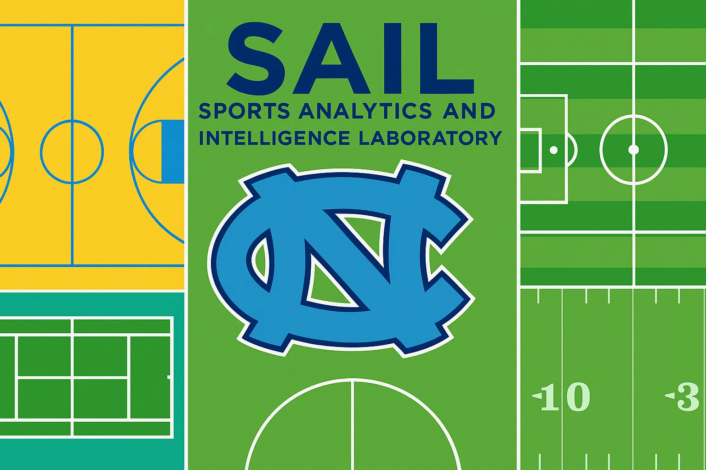
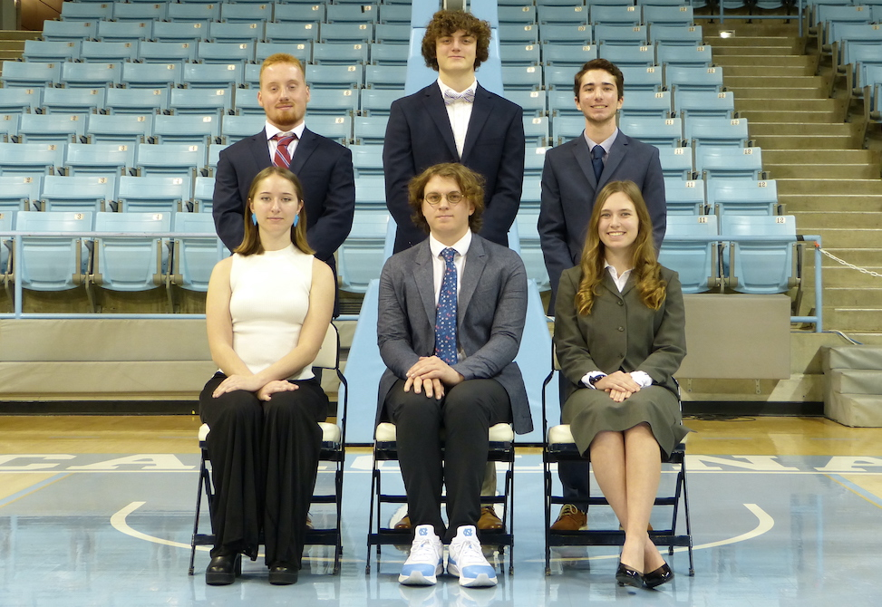

Sports Analytics Intelligence Lab (SAIL)
Advancing Sports Analytics Through Data Science and Research

About SAIL
The Sports Analytics Intelligence Laboratory (SAIL) is a cutting-edge research group at the University of North Carolina at Chapel Hill dedicated to advancing sports analytics through innovative data science methodologies and collaborative research.
Our Mission
We firmly believe that sports analytics can be transformative in helping athletes and coaches improve performance and gain competitive advantages. Our mission is to support UNC’s athletic programs through application-based research in sports analytics, leveraging our diverse data science expertise to extract innovative insights from the data you regularly collect or have access to.
- Data-Driven Insights: Transform raw data into actionable intelligence
- Confidentiality: Private consulting ensures your discoveries remain secure
- Collaboration: Partner with UNC athletic programs for mutual success
- Innovation: Apply cutting-edge analytics to solve real-world sports challenges
History of SAIL
The idea for SAIL was conceived in Fall 2022 when Conor Kerr, advised by Dr. Mario Giacomazzo of the STOR Department, had been working on sports analytics projects with UNC Men’s and Women’s Basketball for two years. As the work demand increased, the need to expand became clear.
From December 2022 to January 2023, the first SAIL applications were received, and 52 well-deserving undergraduates applied to be Undergraduate Sports Analysts (USAs). With the help of Andrew Ackerman, a PhD student in the STOR department, we selected 5 students to be the first team of USAs.

Since our founding, SAIL has grown significantly, now supporting multiple athletic programs and conducting research across various sports disciplines.
What We Do
- Performance Metrics: Develop comprehensive performance evaluation systems
- Predictive Modeling: Create models to forecast game outcomes and player performance
- Statistical Analysis: Apply advanced statistical methods to sports data
- Methodology Innovation: Develop new analytical approaches for sports data
- Tool Development: Create custom software and tools for data analysis
- Academic Research: Contribute to the broader sports analytics community
- Private Consulting: Confidential analysis for UNC athletic programs
- Strategic Planning: Help coaches and staff make data-driven decisions
- Performance Optimization: Identify areas for improvement and optimization
Our Expertise
- Shot analysis and optimization
- Player efficiency metrics
- Game strategy insights
- Performance tracking
- Football performance metrics
- Baseball statistical modeling
- Volleyball analytics
- Track and field optimization
- Machine learning applications
- Predictive modeling
- Data visualization
- Real-time analytics
Contacting SAIL
If you are a member of the UNC community and would like SAIL’s help with data collection, data analysis, or sports analytics research, we’re here to support you.
- Fill out our contact form here
- We’ll review your project and discuss with our team
- Quick response to set up an initial meeting
- Customized plan tailored to your specific needs
Our partnerships can be short-term or long-term depending on your needs and our availability. We’re committed to providing the analytical support you need to achieve your goals.
- UNC Expertise: Deep understanding of UNC’s athletic programs
- Academic Rigor: Research-backed methodologies and approaches
- Confidentiality: Your data and insights remain private
- Innovation: Cutting-edge analytics and technology